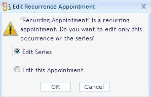
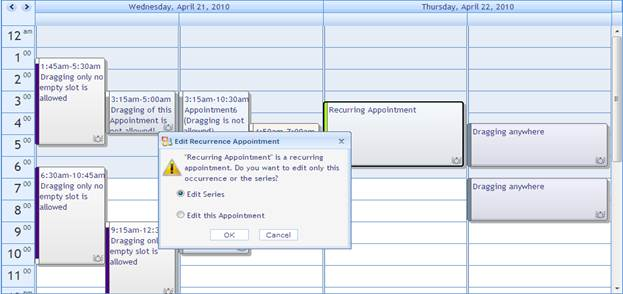
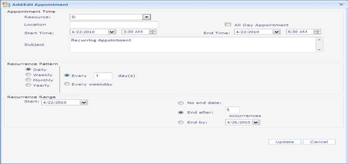
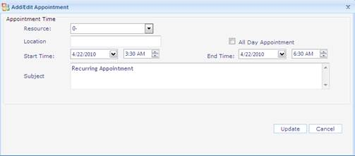

Appointments can be dragged between various resources and set for different time intervals. To perform the drag action, the AllowAppointmentDrag property must be set to True. When dragging a recurrence appointment, a dialog box with two options will pop up. i.e. Editing the Seriesor Editing this Appointment. The first option is for editing the entire series, and the second option is for editing the specific appointment in the recurrence series.
Use Case Scenarios
Drag and Drop option gives users an option to easily edit appointments’ start times and end times.
1. If the recurrence appointment is dragged, two options will be displayed. (Edit the specific appointment and edit the entire appointment series).
2. If the first option is selected, the specific appointment in the recurrence series alone changes and the other appointments in the recurrence series remain the same.
The following screenshot shows the dialog box that pops up when dragging the recurrence appointment.

Figure 70: Popup Dialog Displayed when Recurrence Appointment is Dragged.
Dragging Recurrence Appointments in an Application
When the recurrence appointment is dragged, a dialog box will pop up. This is shown in the following screenshot.

Figure 71: Popup Dialog displayed when Recurrence Appointment is Dragged
On selecting the option, Edit Series, a dialog box to edit the entire recurrence series pops up. Refer to the following screenshot.

Figure 72: Dialog for Editing the Entire Recurrence Series
On selecting the option, Edit this appointment, a dialog box to edit a particular appointment in the recurrence series pops up. Refer to the following code snippet.

Figure 73: Dialog for Editing a Specific Recurrence Appointment
Sample Link
To access the Recurrence sample:
1. Open the Syncfusion Dashboard.
2. Click User Interface.
3. Click the ASP.NET drop-down list, and select Locally Installed Samples.
4. Select Essential Schedule from Other Products tab.
5. Navigate to Basic Features- ->Drag-and-drop Features Demo sample.